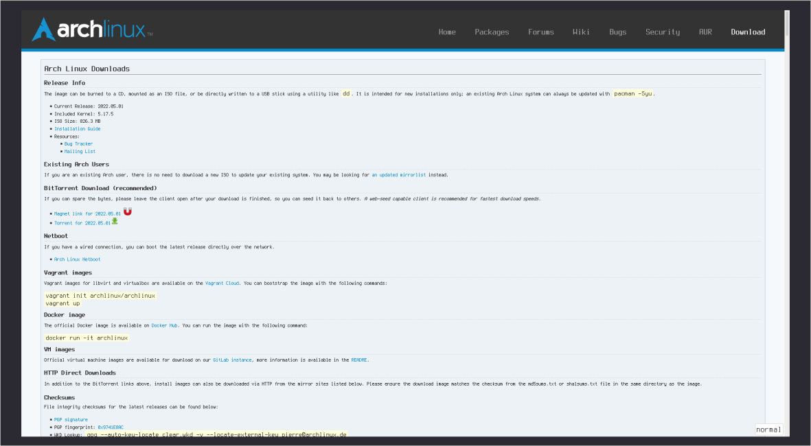
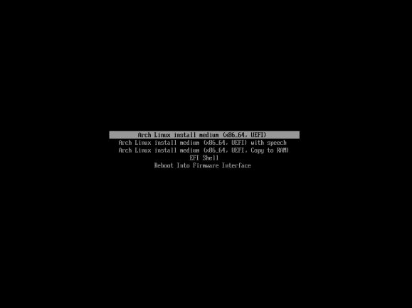
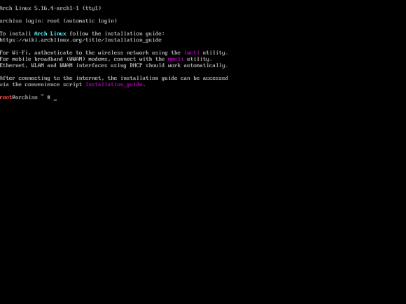
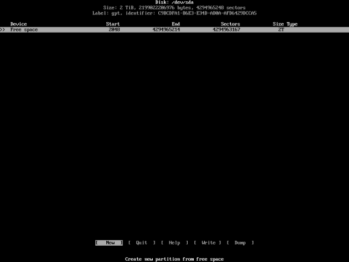
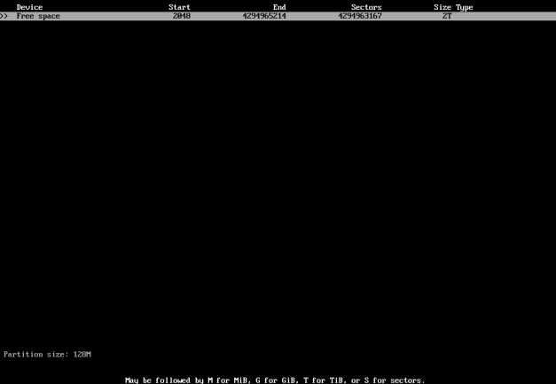
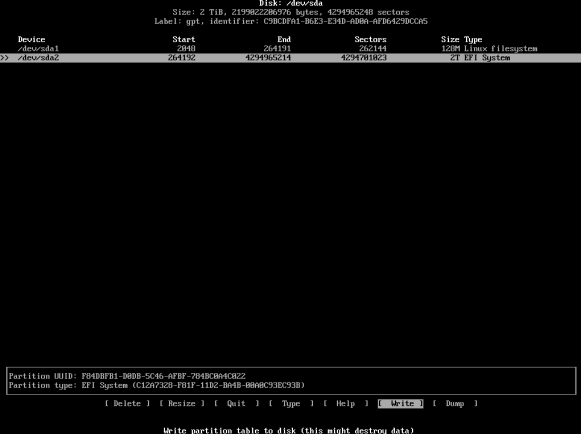

This simple to follow guide for chads will be going over an Arch Linux installation. We will also be going through setting up a window manager and X environment so that you can actually use it.
Before you get started, I'd like to explain why you should install Arch Linux and I'd also like to warn you that you're going to do this at your own risk. I'm not responsible for any data loss caused by this guide.
Once you've taken a deep breath and understand the risks, let's get started with installing Arch Linux.
First step is to make sure you meet the requirements below.
Before we get started, why would you want to install Arch Linux?
I will be installing in a virtual machine but the steps are identical. Just a few minor differences that I will be explaining later on.
First, let's head over to the Arch Linux website and download the latest ISO.
If you've already got an ISO, you don't need to download a new once since we will be using the pacstrap command anyway which will download the latest packages.
You can choose how to download the ISO. I prefer using the torrent because:
If you don't have a torrent client set up, just download the ISO using your web browser. Arch Linux will not come to your house asking for money, don't worry.
Now that we have your ISO file it's time to write it to a USB drive.
If you're going to be installing in a VM then you can skip this part since you can boot directly off the ISO.
To create the USB drive on Windows, you can use the free software tool "Rufus".

(Not my image, I don't use Microhard Binbow$ which steals all my data)
Rufus looks something like this. You'll want to select the Arch Linux image. Then select whether your computer supports UEFI/BIOS.
Most modern machines released ~2012 or later should support UEFI. If you use an Intel Mac from 2007-2019 then you'll want UEFI (EFI). If you're unsure you can go with the default option (BIOS) since it supports both.
Then just write it. There are other ways to write on Windows such as using WSL with 'dd' which you can do or by using balenaEtcher (Which you shouldn't be using since it's not free software, it's open source spyware which is extremely bloated and uses Electron)
On Linux or macOS, writing the image is a lot easier. We're going to do this from the command line without installing any additional software using the dd command.
Make sure your Linux/macOS box is able to run commands as root (ie. sudo/doas). Finally, make sure you have the Arch Linux ISO.
To write it, fire up a terminal (I use st) and change your user to root using the su command.
Now, to check what devices are available on your system, run lsblk. Make note of the devices and make sure to not pick the wrong one. If you do then you WILL lose data.
I'm pretty sure macOS won't let you erase your drives due to SIP but this command is nicknamed 'disk destroyer' for a reason. PLEASE be careful when using it.
Now, lsblk should return something like this.
If you're on macOS, it's going to be diskXsY instead of sdXY.
Now, run the command dd if=X of=Y as root where X is the path to your Arch Linux ISO and Y is your drive (For example, /dev/sdb).
Be extremely careful and hope you didn't enter the wrong drive.
If you did, then I feel slightly bad for you because you may have just lost your massive collection of anime porn.
Now, the dd command will by itself not output anything. But be patient and do not close down your terminal.
Once you can enter commands into your terminal and see your prompt, it's all done and you can reboot your computer.
Now that we have a USB drive, we need to use it. Stick it into your soon-to-be Arch box and reboot/power it on. You'll need to get into your BIOS/UEFI. If you have enough computer knowledge to get into the BIOS then you can follow on with the guide. Simply boot from the USB. Else, simply go back to using Windows like a normie, this guide is for chads only.
Also while you're at it, take your computer to the Microsoft Store and ask them to fix it for you.
Now, let's continue.
Now, let's install Arch Linux. Upon booting, you should see something like this
Simply press enter on the first option UNLESS you have specific needs.
The second option is good if you're blind and need speech.
The third option is good if you only have one USB port but need another for.. say a USB WIFI dongle. This will allow you to remove your USB drive and run the installer from your RAM.
Once it's done booting from the USB you'll see this fancy message. It tells you to RTFM but obviously since you're reading my guide you're too based for that.
It also tells you that there's a fancy """EASY JUST WERKS""" Arch installer but it's really just harder.
Now, run lsblk to see how many drives you have and their NAME.
From my image, we can tell that sda is my only drive. So this is the one we will be installing Arch Linux to.
Now, run cfdisk /dev/sdX where X is your drive NAME.
Then you'll get a few options.
If your machine supports UEFI and you want to use GPT then pick GPT.
If your machine only supports BIOS or you want to use MBR then pick MBR.
The other options are completely irrelevant for us.
If you picked MBR then it's going to look slightly different. You will have a bootable option which.. makes your partition bootable. You will want to have this selected for your boot partitions.
Other than that, you can follow along.
Press enter on [NEW] and enter how big your boot partition should be. This is where your kernel, initramfs and bootloader is going to be. For this guide we will be using Grub but there are other bootloaders that can be used with Arch Linux. You might choose to use the systemd bootloader since it comes with your init system.
A good size unless you'll have many kernels is 128MB. If you need more, I'd go up to 256MB. More than that is probably not necessary.
If you're using EFI then set the Type to 'EFI system'. Otherwise leave it as default.
Now it's time to add Swap. If you have 8GB or more RAM then you probably don't need swap. How much swap you wanna add is fully up to you. I prefer having no swap personally.
Again press enter on [NEW] and set the size to however much swap you have. I'd recommend double your RAM unless you have a lot of RAM in which case you probably don't need swap anyway.
The type for swap should be 'Linux swap'.
I won't be setting swap because I think it's useless.
Now unless you have specific needs such as having a separate /home partition or something, we can allocate the rest to our root partition.
The [Type] for your root partition should be 'Linux filesystem'. Once you're sure it all looks correct, you can [Write] the changes.
Here's what a setup might look like.
This part is really easy. We need to begin by again running lsblk.
In my case, /dev/sda1 is our /boot partition and /dev/sda2 is our root partition
Now, we need to decide what file system to use. I recommend either ext4 or BTRFS. I will personally be going with BTRFS.
We also need a file system for our boot partition. I will be using FAT32 aka VFAT for this.
mkfs.vfat -F 32 /dev/sdXY where X is your drive and Y is your partition. So in my case, mkfs.vfat -F 32 /dev/sda1.mkfs.ext4 /dev/sdXY where X is your drive and Y is your partition. So in my case, mkfs.ext4 /dev/sda2.mkfs.btrfs -f /dev/sdXY where X is your drive and Y is your partition. So in my case, mkfs.btrfs -f /dev/sda2.Output of these commands should be something like this:

Now, if you created a swap partition, we'll need to set that up as well.
mkfs.swap /dev/sdXY where X is your drive and Y is your partition.That wasn't so hard was it? We just created Arch Linux partitions and set them up.
With that done, let's mount our drives so we can begin actually installing Arch.
To mount your root partition, type mount /dev/sdXY /mnt where X is your drive and Y is your partition.
For EFI: Then, to mount your /boot partition, type mkdir /mnt ; mount /dev/sdXY /mnt/boot where X is your drive and Y is your partition. This will create /boot and mount our boot partition to it.
If a swap partition was created, type swapon /dev/sdXY /dev/sdXY where X is your drive and Y is your partition.
Congratulations, we're done mounting and partitioning your drives. Now, we just need to make sure we have a connection to the internet so we can download our packages.
The internetz are useful for two things; Installing Arch Linux and bragging about having installed Arch Linux
If your computer is connected using Ethernet, it should just work with absolutely no setup required. If you are using WIFI then it will not work out of the box.
To set up WIFI on your Arch box, type iwctl station list. Make note of the output. For example, it may be wlan0 or wlan1.
Once you're sure which device it is, type iwctl station 'station' connect SSID where station is the WIFI device we got earlier and SSID is the name of your WIFI network.
Press enter and type in the password your network has. If it doesn't ask you for a password then it probably doesn't need one or you entered the wrong SSID.
Now we're connected to the internet. How fancy is that? To actually use this, we need to install some packages. This would normally be pretty painful but Arch Linux has a command called pacstrap which will basically do the entire process for us. Arch Linux also offers a few bundles of packages like base and base-devel which contain essential packages.
Now, to install packages to our Arch system, we'll need to decide what packages to use. base is basically essential. It contains the base Arch Linux system. Then, if you're going to be using development tools (Required for compiling dwm which we'll do later on) then you'll also want to install base-devel. Keep in mind this also comes with Sudo which you might not want (I certainly don't). But these can later easily be removed using pacman -R
Now, we need a kernel. The Linux kernel is obviously what we want since it's Arch Linux. There are many different variations of the Linux kernel. You can run pacman -Ss linux to see all that are available in the Arch Linux repositories. Here is a small list of them.
If your hardware configuration requires proprietary blobs then you'll also wanna add the linux-firmware package.
If you're going to use WIFI then you'll want to add iwd to your list. There are other ways to manage WIFI but iwd is the one we used during Part 2.5 and it's also the easiest to set up.
If you're going to use Ethernet, you'll need some way to manage networks. I tend to just install dhcpcd though but you can use NetworkManager or something if you want
You'll also need some way to edit text. The base package might come with Nano or something but Nano is unusable so we're gonna install vim as well.
You can use something else like nano or pico to edit your text but they're terrible text editors that only people who wanna make their life harder use.
Finally, we'll need our bootloader which for this guide will be Grub. If you're going to be dual-booting then you'll also want the os-prober package. If you're on an EFI system then you'll want the efibootmgr package.
base base-devel linux linux-firmware dhcpcd grub efibootmgr vimpacstrap /mnt base base-devel linux linux-firmware dhcpcd grub efibootmgr vim.Wait unless the command finishes installing packages to your new root
Arch Linux requires an fstab to boot. An fstab is really just a file with a list of partitions to mount and how to mount them.
Writing one manually isn't hard but Arch Linux made it easier by including a nice command called genfstab.
All we need to do is run genfstab -U /mnt > /mnt/etc/fstab
The -U flag uses UUIDs instead of the disk identifier. This is important to make sure our fstab is always correct.
The > points it to /mnt/etc/fstab.
Now, finally we need to chroot into our new root. Do this by running arch-chroot /mnt.
Now that we're in our new root we need to set our timezone and then locale.
First, run ls /usr/share/zoneinfo
Then run that previous command but with your region. In my case Europe. /Europe
Finally, run ln -sf /usr/share/zoneinfo/Region/City /etc/localtime where Region is.. your region (for example Europe) and where City is your city. (for example Stockholm).
Now, you'll want to edit /etc/locale.gen. Uncomment the locale you need. Edit it using your editor of choice, for example vim /etc/locale.gen. For en_US, uncomment en_US.UTF-8 UTF-8. You can use / to quickly find text in Vim. For example, sv_SE.UTF-8 UTF-8 would be the locale for Sweden.
Now we need to set our hostname. To do this, run the following command. Replace archbox with what you want your hostname to be. echo "archbox" > /etc/hostname.
In order to boot Arch Linux after we're done installing, we need to install a bootloader. If you followed this guide exactly as it's written you should have Grub as your bootloader.
grub-install --target=x86_64-efi --efi-directory=/boot ; grub-mkconfig -o /boot/grub/grub.cfg
grub-install /dev/sdX where X is your drive.
Enable the services. If you installed dhcpcd, run systemctl enable dhcpcd. If you installed iwd, run systemctl enable iwd. Now, the final part before we can reboot and begin setting up our Arch Linux box. Setting the root password. By default, the root password isn't set so you can't actually log in. You can set it yourself by running the passwd command. Once you've set the password, it's time to reboot. To do this, simply type exit to exit the chroot environment and then reboot to reboot the system.
Now that we've got a base Arch Linux install set up, log in as root with the password you set earlier.
Once you're logged in, run useradd -mG wheel,audio,video,users user where user is your user name. I will name my user 'speedie'.
The -m flag creates a home directory for the user. The -G flag will add it to the groups. wheel is the group that we will allow sudo or doas to give root access to. audio will allow us to use ALSA (Advanced Linux Sound Architecture) for audio. video will allow us to start an X session. users is a group all users should be in.
Now let's set his/her password by running passwd user where user is the account we created. Once you have access to this account you can set the root account password to random text if you want security.
If you wanna use sudo, you can do so by editing /etc/sudoers using your favorite editor.
Above is an example of how to set up sudo
If you installed base-devel then sudois already installed. Otherwise you can install it if you want.
I will be using doas instead however because sudo is more bloated than it needs to be.
If you wanna use doas, you can install it using pacman -Sy doas.
To set up doas, simply run echo "permit :wheel" > /etc/doas.conf or alternatively echo "permit nopass :wheel" > /etc/doas.conf if you don't want to enter your password every time you try to run a command as root. It's not very secure but I personally prefer it.
Now that we have set up our account and permissions, run exit and log in with your new account.
Let's set up Xorg and then the window manager which will be dwm. Start by installing Git. Do this by running pacman -S git libXinerama. libXinerama will be used to compile dwm with support for multiple monitors. We also need libXft but we will be installing libXft-bgra since otherwise dwm will crash if it sees a color emoji.
Run cd to change directory to ~. Now we can mkdir -pv .config and cd .config.
Before we can install dwm, we need libXft. To do this, run the following command git clone https://aur.archlinux.org/libxft-bgra ; cd libxft-bgra ; makepkg -i. This will install libXft-bgra. Now you can go ahead and cd back into ~/.config.
If you've already got a build of dwm, go ahead and clone that instead. If you don't, git clone https://git.suckless.org/dwm ; cd dwm. Now that we're inside the dwm source code, simply run make clean install as root. This should install dwm. If you're using my build you also need imlib2 and harfbuzz.
You'll also likely want dmenu for our run launcher and st for our terminal. Otherwise you'll need to edit the dwm source code.
To install dmenu, cd ~/.config ; git clone https://git.suckless.org/dmenu ; cd dmenu ; doas make clean install.
To install st, cd ~/.config ; git clone https://git.suckless.org/st ; cd st ; doas make clean install.
The 8th and final part of this guide; setting up Xorg.
First, run pacman -S xorg-server xorg-xinit xf86-input-libinput as root. This will install our server, xinit and xf86-input-libinput necessary to use our keyboard and mouse with Xorg. Then also run pacman -Ss xf86-video as root and look at the output. You don't technically need xorg-xinit, you can use sx which I covered in my RSS post. However it's not very good for new users and not very well documented so I suggest you use xinit.

These are display drivers. You'll want to install the one you need. If you're in a VM like me, it's xf86-video-vmware for VirtualBox or VMware and xf86-video-qxl for QEMU/KVM. These are correct for everyone except nvidia users who will want the nvidia package instead. Run it for yourself and install the driver you need.
We need to set up xclip for our clipboard and picom for our compositor. You can also choose to install xorg-xrdb if your software supports .Xresources however I will not be covering that in this guide.
You can do this by running pacman -S xclip picom as root.
Finally, let's edit our .xinitrc file. This file will run every time you run the command startx.
vim ~/.xinitrc
Now add these three lines to the file:
Then save the file using ':wq' and run startx. That should be everything. If you did it correctly you should be in dwm. If it fails to start then you're probably missing fonts. I suggest installing terminus-font. It's a nice font.
Now you can install maim and neofetch so you can brag about having installed Arch on r/unixporn or whatever. Thanks for reading this guide, I hope it helped you set up Arch Linux. Have a good day!